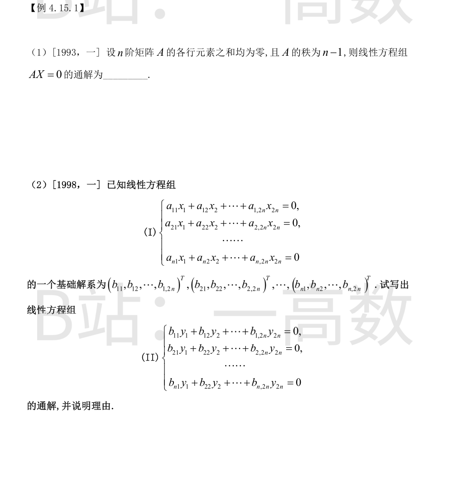
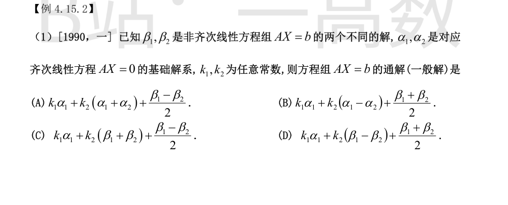
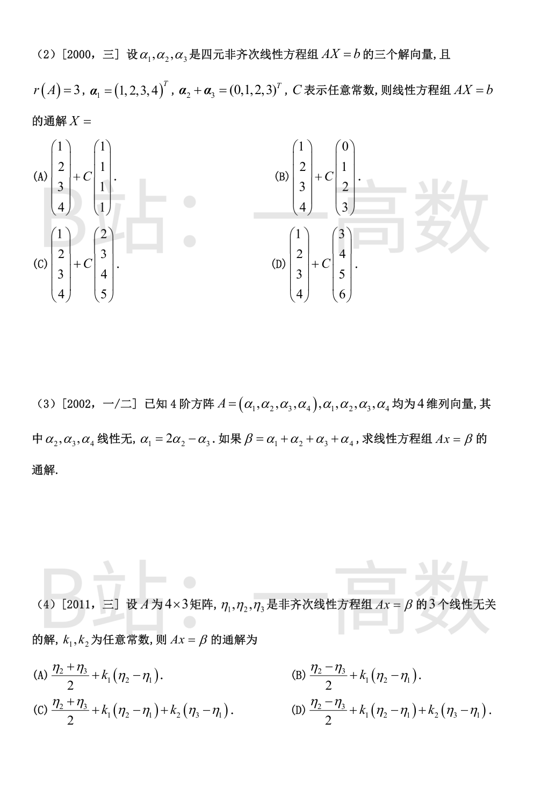

各行元素之和为零，即 $A(1,1,\dots,1)^T=(0,\dots,0)^T$，故 $\xi=(1,1,\dots,1)^T$ 是 $AX=0$ 的非零解。\n\n又 $r(A)=n-1$，解空间维数 $n-r(A)=1$，故 $\xi$ 就构成基础解系，通解为 $x=k(1,1,\dots,1)^T$。
(I) 的基础解系含 $n$ 个向量，故 $r(A)=2n-n=n$；$B$ 以 $\beta_1,\dots,\beta_n$（即 (I) 的基础解系）为行，线性无关，故 $r(B)=n$，(II) 的解空间维数为 $2n-n=n$。\n\n由 $A\beta_j=0\ (j=1,\dots,n)$ 得 $AB^T=O$，转置得 $BA^T=O$。这说明 $A^T$ 的每一列，即 $A$ 的每一行的转置\n\n$$\alpha_i=(a_{i1},a_{i2},\dots,a_{i,2n})^T\quad(i=1,\dots,n)$$\n\n都是 (II) 的解。又 $\alpha_1,\dots,\alpha_n$ 线性无关（$r(A)=n$），且个数恰等于 (II) 解空间的维数 $n$，故构成 (II) 的基础解系。\n\n所以 (II) 的通解为 $y=\sum_{i=1}^n k_i\alpha_i$。


通解 = 特解 + 齐次通解。\n\n$(\beta_1+\beta_2)/2$：$A\cdot\frac{\beta_1+\beta_2}{2}=\frac{b+b}{2}=b$，是 $Ax=b$ 的特解；$(\beta_1-\beta_2)/2$ 是齐次解而非特解，排除 (A)。\n\n齐次部分须构成 $N(A)$ 的基（二维）。$k_1\alpha_1+k_2(\alpha_1-\alpha_2)$：$\alpha_1,\ \alpha_1-\alpha_2$ 是齐次解且线性无关（$\alpha_2=\alpha_1-(\alpha_1-\alpha_2)$ 可被表示），构成基，(B) 可行。\n\n(C)：$\beta_1+\beta_2$ 不是齐次解（$A(\beta_1+\beta_2)=2b\neq0$），排除。\n\n(D)：齐次部分 $k_1\alpha_1+k_2(\beta_1-\beta_2)$ 至多张成一维方向加 $\beta_1-\beta_2$，一般不能覆盖二维解空间（缺 $\alpha_2$ 的独立方向），排除。\n\n故选 (B)。